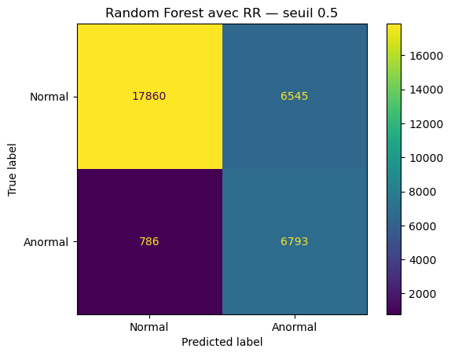

ECG arrhythmia detection
I prepared ECG signals and trained three AI models to detect abnormal heartbeats in new patients. I then compared their performance.
Project question
How can abnormal ECG beats be detected in patients whose data was not used to train the model?
Context
An electrocardiogram records the heart’s electrical activity. An arrhythmia is an irregular heart rhythm. My aim was to identify abnormal beats in these signals. This is an educational project and is not a medical device.
My contribution
I prepared the data and trained and compared the models. I designed a patient-level evaluation and examined the errors to understand the limits of each approach.
Data
I used the MIT-BIH annotations to group the selected heartbeats into normal and abnormal classes.
| Source | MIT-BIH Arrhythmia Database on PhysioNet. It contains 48 recordings from 47 patients. The signals are sampled at 360 Hz. |
|---|---|
| Selected heartbeats | 101,015 beats in total. These include 75,022 normal beats and 25,993 abnormal beats. The abnormal class represents 25.7% of the data. |
| Classes | The normal class corresponds to N. The abnormal class includes A · V · L · R · F · E · J. Other annotations were excluded. |
| Segment | Each beat contains 252 samples. The segment starts 0.25 s before the annotated peak and ends 0.45 s after it. |
Methods and tools
I compared models using calculated features with a 1D CNN using normalised signals. I also tested the contribution of RR intervals.
Read the detailed method
-
Segmenting the heartbeats
I segmented the signal around the peaks provided in the annotations. Each window contains 252 samples and covers 0.25 s before the peak and 0.45 s after it. I used these segments to study beat morphology, which means the shape of each beat in the signal. Automatic peak detection was outside the scope of this project. -
Z-score normalisation
I applied Z-score normalisation to each segment before passing it to the CNN. This reduces differences in scale between beats so the model can compare their shape. I kept the raw signal to calculate amplitude features for the classical models. -
Classical models and a 1D CNN
I trained logistic regression and a Random Forest using features calculated for each beat. I compared their results with a 1D CNN. This convolutional neural network learns patterns directly from the normalised segments.I used logistic regression as a baseline. The Random Forest also allowed me to examine feature importance. I tested a version without RR intervals to assess the contribution of rhythm information.
-
Class weighting
Abnormal beats represent 25.7% of the data. I weighted the classes during training to account for this imbalance. Errors on the abnormal class therefore carried more weight during learning. -
Tuning the decision threshold
The threshold determines the score above which a beat is considered abnormal. I used the validation set to choose the threshold with the highest F2 score. I then compared it with the usual threshold of 0.5 to examine its effect on detected abnormalities and false alarms.The F2 score gives more weight to recall than precision. I tuned the threshold on the validation set and kept the test set for the final evaluation.
Morphological features and RR intervals
I calculated 17 features per beat. The 13 morphological features describe properties such as signal energy and amplitude. They also cover slopes, area and beat width. The four rhythm features use RR intervals, which measure the time between successive R peaks. I trained logistic regression and a Random Forest with 300 decision trees using these features. I also tested the Random Forest with morphological features only.1D CNN architecture
I built a 1D CNN in PyTorch to analyse the normalised segments. It uses three convolutional blocks with 16, 32 and 64 filters. The architecture includes BatchNorm and a dropout rate of 0.3. I trained the network for 10 epochs. It receives no rhythm features.See the tools and how I used them
| Tool | Use | Purpose |
|---|---|---|
| Python and wfdb | Reading signals and annotations | Access to PhysioNet data through a dedicated library |
| NumPy and pandas | Preparing segments and features | Calculations across more than 100,000 heartbeats |
| scikit-learn | Classical models and evaluation | Patient-group splits and evaluation metrics |
| PyTorch | Developing the 1D CNN | Choosing the architecture and monitoring training |
| Jupyter and Matplotlib | Notebooks and plots | Documenting the project steps and presenting results |
Evaluation protocol
I split the data by patient to test the models on people absent from the training set. No patient appears in more than one of the three sets.
The training set contains 55,821 beats. The validation set contains 13,210 and the test set contains 31,984.
Results
I evaluated the models on the 15 test patients. The scores refer to the abnormal class. Precision, recall and F1 were calculated using a threshold of 0.5.
Recall is the proportion of abnormal beats detected by the model. Precision is the proportion of genuine abnormalities among the beats flagged as abnormal. ROC-AUC measures how well the model separates the two classes across all thresholds.
Model comparison
| Model | ROC-AUC | Precision | Recall | F1 |
|---|---|---|---|---|
| Logistic regression | 0.812 | 34.1% | 79.2% | 0.477 |
| Random Forest | 0.864 | 50.9% | 89.6% | 0.650 |
| Random Forest without RR | 0.856 | 51.8% | 89.8% | 0.657 |
| CNN 1D | 0.867 | 55.2% | 71.6% | 0.623 |
Outlined values mark the best score in each column. F1 combines precision and recall. No model performs best on every metric.
Random Forest and CNN confusion matrices
15 test patients · Abnormal class · Threshold 0.5
I used these matrices to examine missed abnormalities and normal beats incorrectly flagged as abnormal.

Random Forest
- ROC-AUC
- 0.864
- Precision
- 50.9%
- Recall
- 89.6%
- F1
- 0.650
The Random Forest uses 13 morphological features and four rhythm features. It contains 300 trees.
Precision-recall curves
My conclusions
Similar ROC-AUC scores with different trade-offs
I obtained a ROC-AUC of 0.867 with the CNN and 0.864 with the Random Forest. These scores are close. At a threshold of 0.5, Random Forest recall reaches 89.6% compared with 71.6% for the CNN. The Random Forest therefore detects more abnormal beats.The CNN has higher precision at 55.2% compared with 50.9%. It achieves this without the calculated features used by the classical models. I did not find one model that performed best on every metric.
A limited contribution from RR intervals in this experiment
I compared the Random Forest with and without RR intervals to isolate their effect. Adding them increases ROC-AUC by 0.008 but reduces average precision by 0.059. Average precision summarises the precision-recall curve. It differs from precision at the threshold of 0.5 shown in the table. I also examined feature importance. Shape features remain the most important in this model.Threshold selection remains sensitive
I selected a threshold of 0.012 for the Random Forest using the seven validation patients. On the test set it produces 99.99% recall but only 24.8% precision. Almost every beat is flagged as abnormal. The F2 score falls from 0.778 to 0.623.The same tuning procedure improves the CNN’s F2 score from 0.676 to 0.750. A threshold chosen on a small group of patients does not transfer equally well to the test set for every model.
Results vary between patients
I examined how abnormal beats were distributed across test patients. Recordings 207 and 214 contain almost exclusively abnormal beats. Together they account for 54% of abnormal beats in the test set. Another recording contains no abnormalities. This showed me how much overall scores depend on which patients are included in the test set.Limitations and next steps
Limitations
I did not calculate confidence intervals. The validation set contains only seven patients. The models distinguish normal from abnormal beats without identifying the type of abnormality.
Possible next steps
I could test several splits with grouped cross-validation by patient. This would also help reassess threshold selection. A bootstrap could estimate confidence intervals. I could then combine signal and rhythm information in the CNN or try to recognise different types of abnormality.